ggplot(mpg, aes(x = displ, y = hwy)) +
geom_point() +
labs(x = "排気量", y = "燃費（高速）", title = "散布図の例")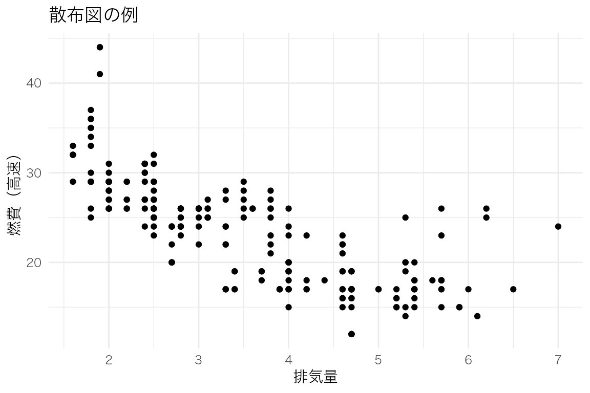
この章では、ggplot2で描ける様々な図を紹介します。「こんな図を描きたい！」と思ったら、対応するコードを参考にしてください。
data：使用するデータフレームaes()：軸や色などの「見た目」と変数の対応geom_xxx()：図の種類（点、線、棒など）2つの連続変数の関係を見る。

連続変数の分布を見る。
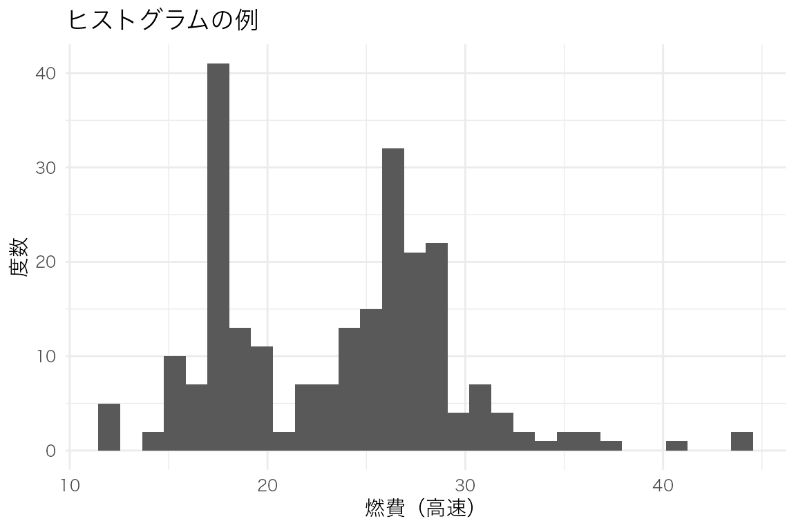
分布を滑らかな曲線で表す。
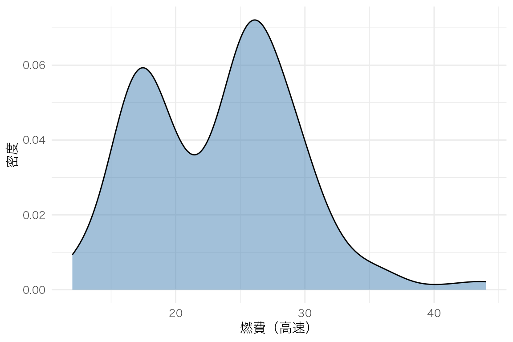
カテゴリごとの度数や集計値を表す。
グループ間の分布を比較。
箱ひげ図＋分布の形状。
箱ひげ図・バイオリンプロットの発展形。分布の形状（半密度曲線）、要約統計量（箱ひげ図）、個々のデータ点（ジッター）の3要素を1つの図に重ねて表示する。データの全体像を把握しやすい。
ggdist パッケージの stat_halfeye() を使うと、密度曲線を片側だけ描くことができる。これに geom_boxplot() と geom_jitter() を重ねることで、レインクラウドプロットが完成する。
# irisデータを使用（Species別にSepal.Lengthの分布を比較）
ggplot(iris, aes(x = Species, y = Sepal.Length, fill = Species)) +
# 半分の密度曲線（雲の部分）
ggdist::stat_halfeye(
adjust = 0.5, # バンド幅の調整
width = 0.6, # 密度曲線の幅
.width = 0, # 区間表示を無効化
justification = -0.2, # 箱ひげ図の上に配置
point_colour = NA # 中央値の点を非表示
) +
# 箱ひげ図（要約統計量）
geom_boxplot(
width = 0.15,
outlier.shape = NA # 外れ値はジッターで表示するため非表示
) +
# 個々のデータ点（雨の部分）
geom_jitter(
width = 0.05, # 横方向のばらつき
alpha = 0.3, # 透過度
size = 1.2
) +
labs(
x = "種",
y = "がく片の長さ (cm)",
title = "レインクラウドプロットの例"
) +
theme(legend.position = "none")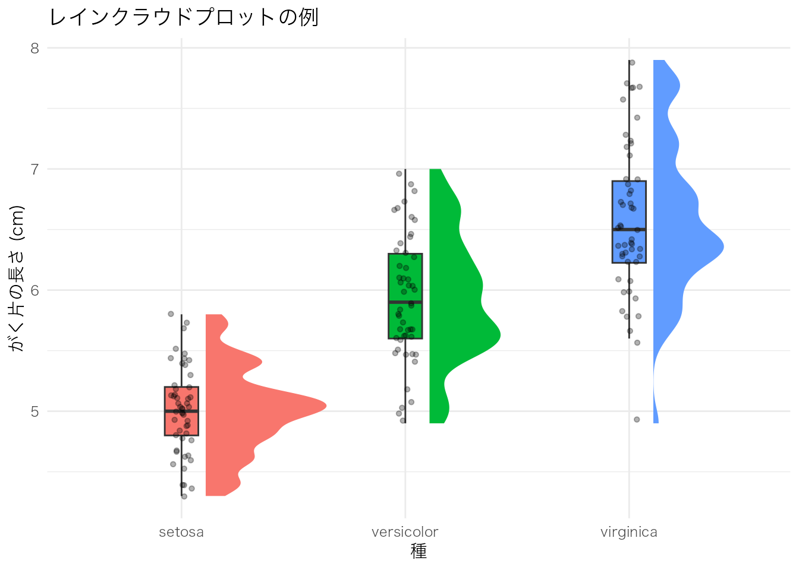
coord_flip() を加えると横向きになる。データ点が左に「降り注ぐ雨」、密度曲線が右に広がる「雲」のように見える。
ggplot(iris, aes(x = Species, y = Petal.Length, fill = Species)) +
ggdist::stat_halfeye(
adjust = 0.5,
width = 0.6,
.width = 0,
justification = -0.2,
point_colour = NA
) +
geom_boxplot(
width = 0.15,
outlier.shape = NA
) +
geom_jitter(
width = 0.05,
alpha = 0.3,
size = 1.2
) +
labs(
x = "種",
y = "花弁の長さ (cm)",
title = "横向きレインクラウドプロット"
) +
coord_flip() +
theme(legend.position = "none")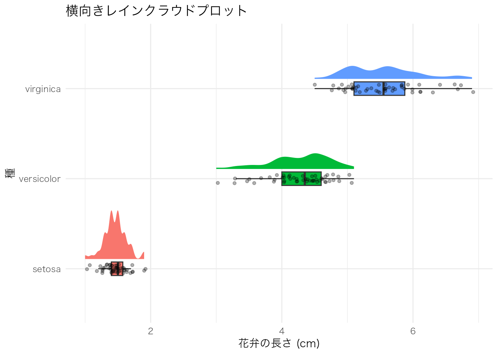
色やテーマを調整して、論文やプレゼン向けの仕上がりにする。
# 色パレットを指定した例
ggplot(iris, aes(x = Species, y = Sepal.Width, fill = Species)) +
ggdist::stat_halfeye(
adjust = 0.5,
width = 0.6,
.width = 0,
justification = -0.2,
point_colour = NA
) +
geom_boxplot(
width = 0.15,
outlier.shape = NA,
alpha = 0.7
) +
geom_jitter(
width = 0.05,
alpha = 0.4,
size = 1.0,
aes(color = Species)
) +
scale_fill_brewer(palette = "Pastel1") +
scale_color_brewer(palette = "Set1") +
labs(
x = "種",
y = "がく片の幅 (cm)",
title = "カスタマイズしたレインクラウドプロット"
) +
theme(legend.position = "none")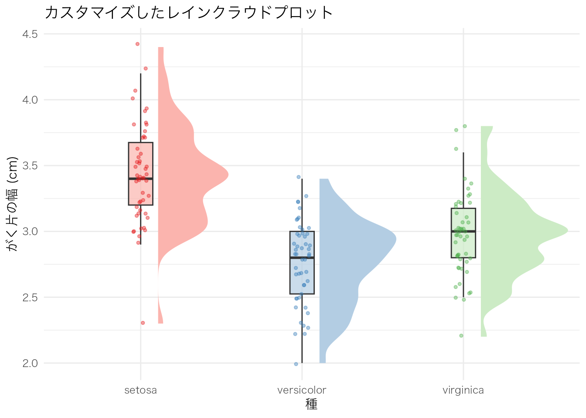
| 要素 | geom/stat | 役割 |
|---|---|---|
| 雲（Cloud） | ggdist::stat_halfeye() |
分布の形状を半密度曲線で表示 |
| 箱（Box） | geom_boxplot() |
中央値・四分位範囲を表示 |
| 雨（Rain） | geom_jitter() |
個々のデータ点を表示 |
棒グラフや箱ひげ図だけでは見えない分布の偏りや多峰性を発見できるため、近年の論文で使用が増えている。
散布図の上側と右側に、各変数の周辺分布（ヒストグラム・密度曲線・箱ひげ図）を並べて表示する。2変数の関係と各変数の分布を一度に把握できる。
ggExtra パッケージの ggMarginal() を使う。まず通常の ggplot オブジェクトを作成し、それを ggMarginal() に渡す。
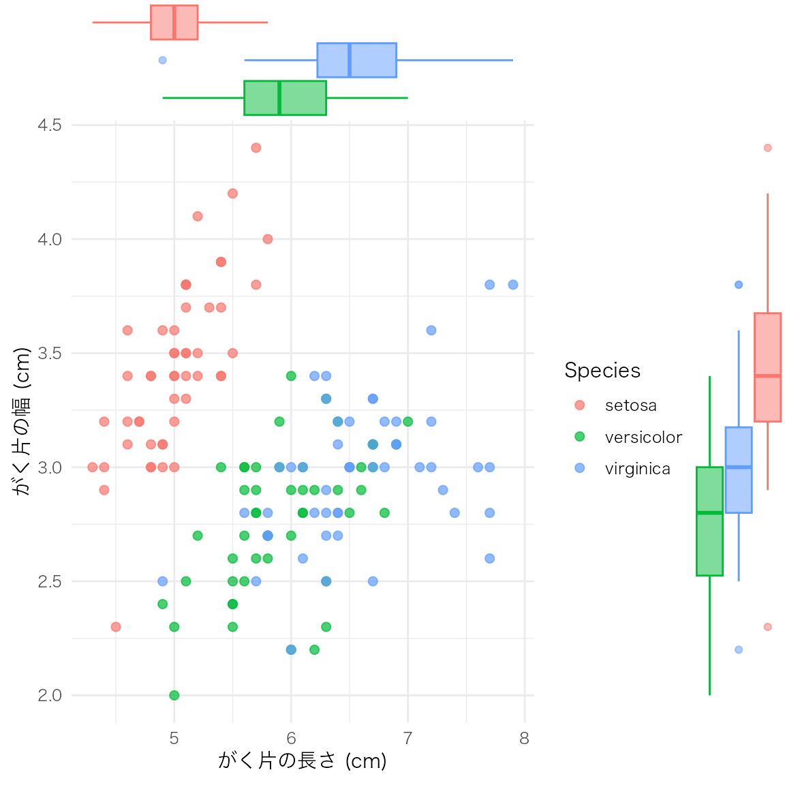
| 引数 | 説明 | 主な値 |
|---|---|---|
type |
周辺分布の種類 | "histogram", "density", "boxplot", "violin", "densigram" |
groupColour |
グループごとに枠線の色を分ける | TRUE / FALSE |
groupFill |
グループごとに塗りつぶしの色を分ける | TRUE / FALSE |
margins |
どの辺に表示するか | "both", "x", "y" |
size |
周辺プロットの相対サイズ（小さいほど大きくなる） | デフォルト 5 |
散布図と周辺分布を組み合わせることで、変数間の関係と各変数の分布形状を同時に確認できる。探索的データ分析（EDA）の初期段階で特に有用。
2つの連続変数の同時分布を、カーネル密度推定に基づく等高線で可視化する。散布図ではデータ点が重なって見えにくい場合に、密度の濃淡を把握しやすい。
geom_density_2d() は等高線のみを描画する。散布図と重ねて使うことが多い。
geom_density_2d_filled() は等高線の間を密度の大きさに応じて塗りつぶす。データ密度の高低が直感的にわかる。
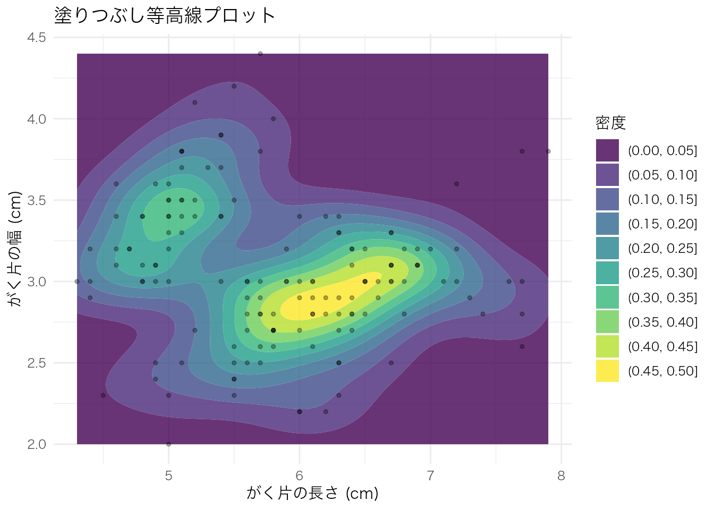
| 関数 | 用途 |
|---|---|
geom_density_2d() |
等高線のみ。散布図と重ねて密度の構造を確認したいとき |
geom_density_2d_filled() |
塗りつぶし等高線。密度の高低を色で直感的に把握したいとき |
等高線プロットは、散布図上でデータ点が密集して判読しにくい場合や、2変数の同時分布の形状（多峰性、偏りなど）を確認したい場合に適している。
時系列や順序のあるデータ。
グループごとに別々のパネルで表示。
2つのカテゴリ変数のクロス集計。
mtcars |>
select(mpg, cyl, disp, hp, wt) |>
cor() |>
as.data.frame() |>
rownames_to_column("var1") |>
pivot_longer(-var1, names_to = "var2", values_to = "cor") |>
ggplot(aes(x = var1, y = var2, fill = cor)) +
geom_tile() +
geom_text(aes(label = round(cor, 2))) +
scale_fill_gradient2(low = "blue", mid = "white", high = "red", midpoint = 0) +
labs(x = "", y = "", fill = "相関係数") +
theme(axis.text.x = element_text(angle = 45, hjust = 1))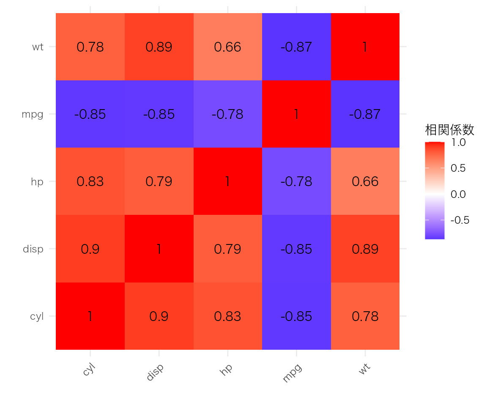
通常の棒グラフを coord_polar() で極座標に変換して円形に配置する。カテゴリ数が多い場合に、直線的な棒グラフよりもコンパクトに表示できる。グループごとの色分けと組み合わせると、カテゴリ間の比較が視覚的に際立つ。
mtcars データを使い、車種ごとの馬力（hp）を円形に表示する。
# mtcarsデータに車名の列を追加
df_cars <- mtcars |>
tibble::rownames_to_column("car") |>
dplyr::mutate(car = factor(car, levels = car))
ggplot(df_cars, aes(x = car, y = hp)) +
geom_bar(stat = "identity", fill = "steelblue") +
coord_polar(start = 0) +
labs(y = "馬力 (hp)", title = "車種別の馬力（円形棒グラフ）") +
theme(
axis.text.x = element_text(size = 6),
axis.title.x = element_blank()
)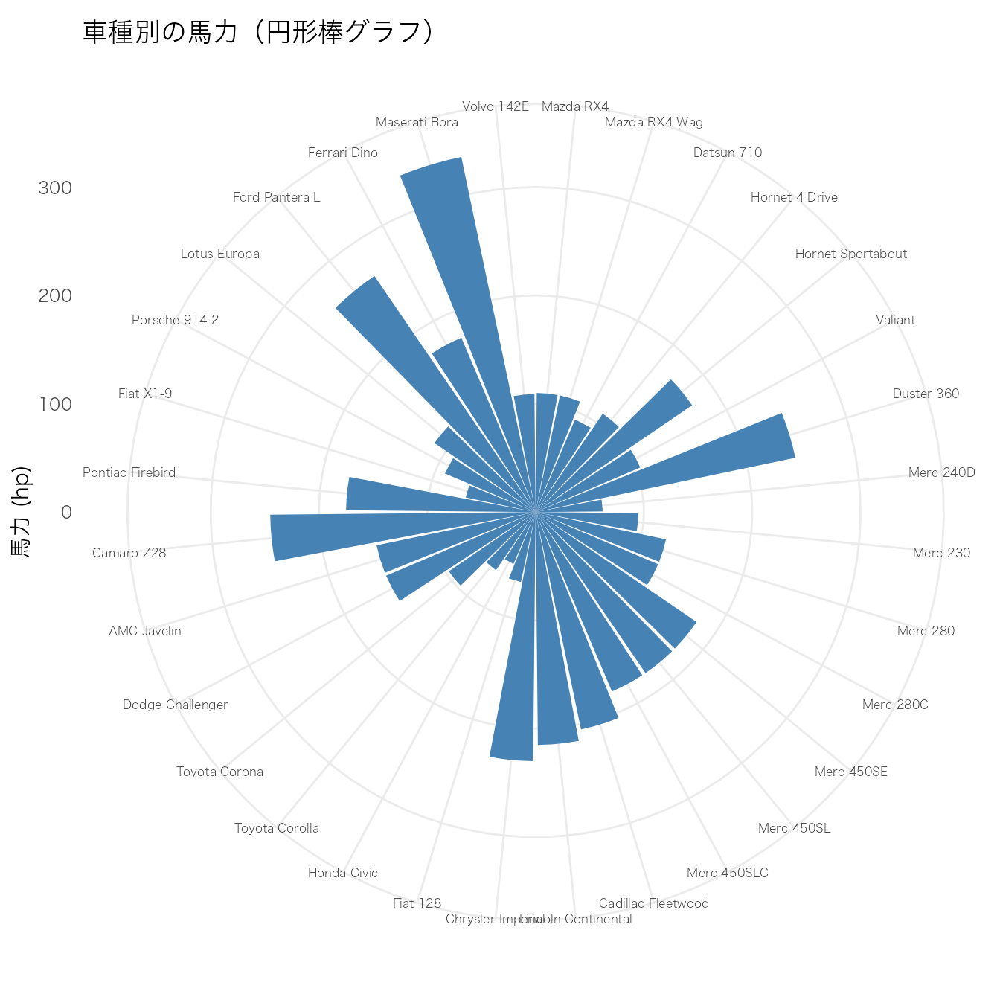
シリンダー数（cyl）でグループ分けし、色で区別する。棒の間に空白行を挿入して、グループの区切りをわかりやすくする。
# シリンダー数でグループ化し、グループ内で馬力順に並べ替え
df_grouped <- mtcars |>
tibble::rownames_to_column("car") |>
dplyr::mutate(cyl = factor(cyl)) |>
dplyr::arrange(cyl, hp) |>
dplyr::mutate(car = factor(car, levels = car))
ggplot(df_grouped, aes(x = car, y = hp, fill = cyl)) +
geom_bar(stat = "identity") +
coord_polar(start = 0) +
scale_fill_brewer(palette = "Set2") +
labs(y = "馬力 (hp)", fill = "シリンダー数",
title = "シリンダー数別の馬力（円形棒グラフ）") +
theme(
axis.text.x = element_text(size = 6),
axis.title.x = element_blank()
)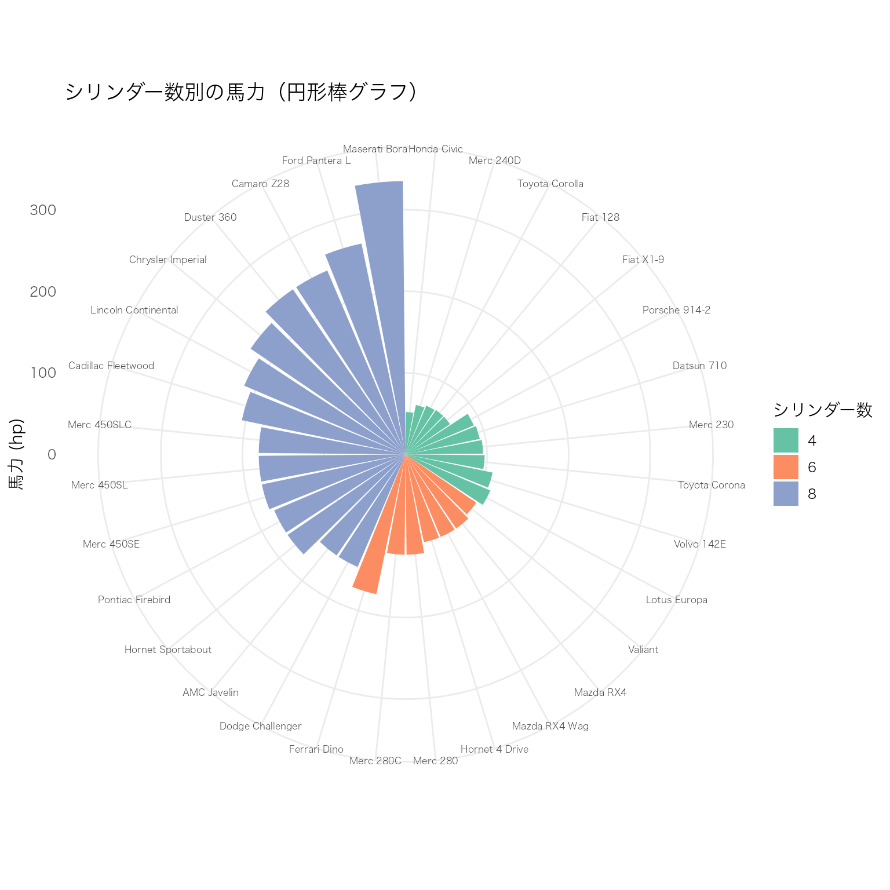
棒の外側にラベルを配置する。geom_text() と極座標の角度計算を組み合わせて、ラベルの向きを棒に合わせて回転させる。
# ラベル用の角度と水平位置を計算
n_cars <- nrow(df_grouped)
df_label <- df_grouped |>
dplyr::mutate(
id = dplyr::row_number(),
angle = 90 - 360 * (id - 0.5) / n_cars,
hjust = ifelse(angle < -90, 1, 0),
angle = ifelse(angle < -90, angle + 180, angle)
)
ggplot(df_label, aes(x = car, y = hp, fill = cyl)) +
geom_bar(stat = "identity") +
# 棒の外側にラベルを表示
geom_text(
aes(y = hp + 5, label = car, angle = angle, hjust = hjust),
size = 2.2
) +
coord_polar(start = 0) +
scale_fill_brewer(palette = "Set2") +
# y軸の範囲を広げてラベル用の余白を確保
ylim(-50, max(df_label$hp) + 40) +
labs(fill = "シリンダー数",
title = "ラベル付き円形棒グラフ") +
theme(
axis.text = element_blank(),
axis.title = element_blank(),
panel.grid = element_blank()
)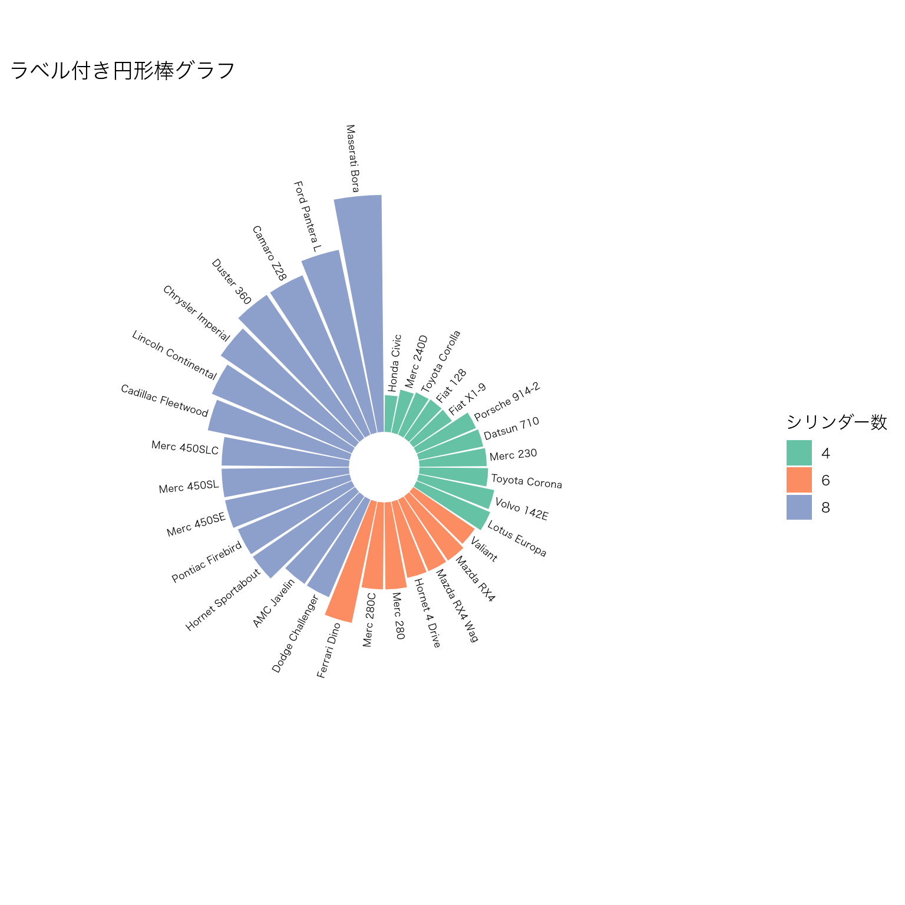
| 要素 | 説明 |
|---|---|
coord_polar(start = 0) |
直交座標を極座標に変換。start は開始角度（ラジアン） |
geom_bar(stat = "identity") |
集計済みの値をそのまま棒の高さにする |
ylim(-50, ...) |
中心に空白を作り、棒が中心から離れた位置から始まるようにする |
| ラベルの角度計算 | 90 - 360 * (id - 0.5) / n で各棒に対応する角度を求め、下半分は180度回転させて読みやすくする |
円形棒グラフはインフォグラフィックスやポスターで目を引く効果があるが、正確な値の比較には通常の棒グラフの方が適している。用途に応じて使い分けること。
複数の連続変数を並行な軸に配置し、各観測値を折れ線で結ぶことで、多変量データのパターンを視覚化する。変数間の関係やグループごとの傾向を一度に把握できる。
GGally パッケージの ggparcoord() を使うと簡単に描ける。
iris データの4つの数値変数を平行座標で表示し、Species で色分けする。
scale 引数でデータの正規化方法を変えると、見え方が大きく変わる。
透過度やスプライン曲線を加えて、グループごとの傾向をわかりやすくする。
GGally::ggparcoord(
data = iris,
columns = 1:4,
groupColumn = "Species",
scale = "uniminmax",
alphaLines = 0.3, # 線の透過度（重なりを見やすく）
splineFactor = 10 # スプライン曲線で滑らかに
) +
scale_color_brewer(palette = "Set1") +
labs(
x = "変数",
y = "正規化された値",
color = "種",
title = "スプライン曲線によるパラレルプロット"
) +
theme(legend.position = "bottom")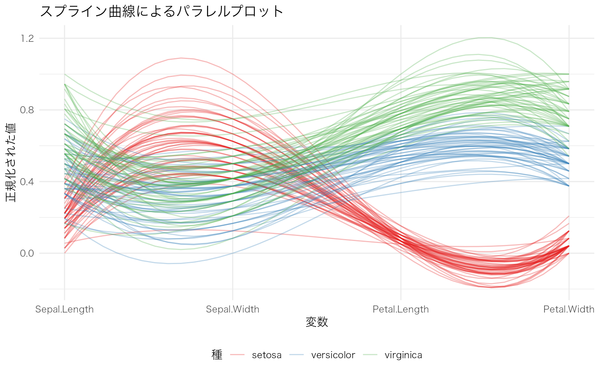
showPoints = TRUE でデータ点を表示し、boxplot = TRUE で各軸に箱ひげ図を重ねることで、各変数の分布も同時に確認できる。
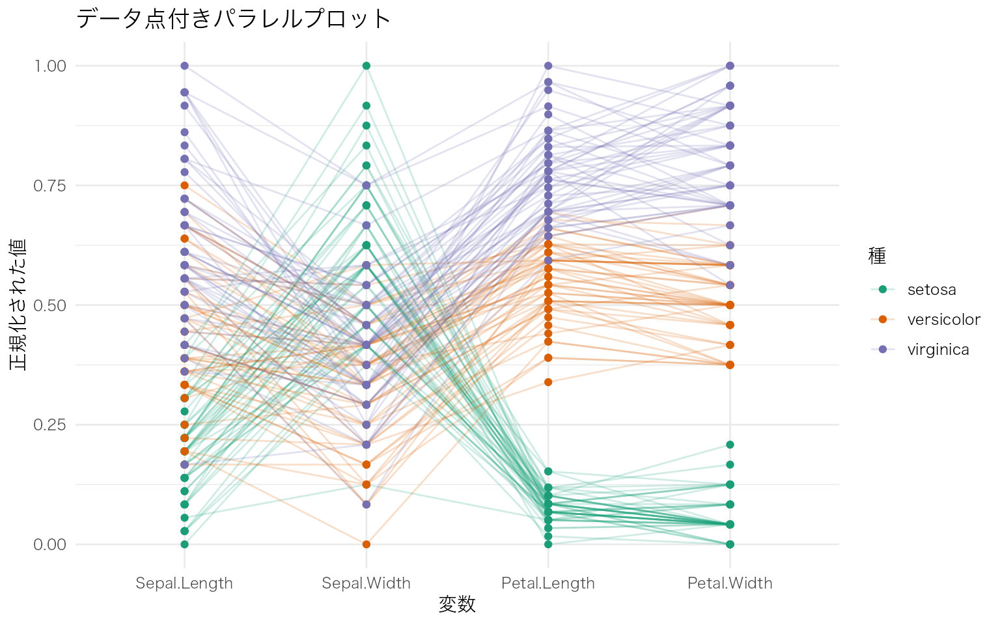
| 引数 | 説明 | 主な値 |
|---|---|---|
columns |
使用する列番号（数値変数） | 1:4, c(1, 3, 5) など |
groupColumn |
色分けに使う列名または列番号 | "Species", 5 など |
scale |
正規化方法 | "std"（標準化）, "uniminmax"（0-1正規化）, "globalminmax"（全体の最小最大）, "center"（中心化） |
alphaLines |
線の透過度 | 0 – 1（小さいほど透明） |
splineFactor |
スプライン曲線の滑らかさ | 正の整数。大きいほど滑らか |
showPoints |
データ点を表示するか | TRUE / FALSE |
パラレルプロットは、変数の数が多い多変量データの探索に適している。特に、グループ間でどの変数に違いがあるかを視覚的に素早く把握できる。ただし、観測数が多い場合は線が重なって見にくくなるため、透過度の調整やサンプリングが必要になる。
複数の時点やカテゴリ間で、対象がどのように移動・変化したかを帯の太さで表現する図。学生の専攻選択の推移、患者の治療段階の変化、アンケート回答の変遷など、カテゴリカルデータの流れを可視化するのに適している。
ggalluvial パッケージを使うと、ggplot2 の文法で描ける。
学生の専攻選択が3時点（1年次・2年次・3年次）でどう変化したかを示すサンプルデータを作成し、基本的なアリュビアルプロットを描く。
# サンプルデータ: 学生の専攻選択の推移（3時点 x 4カテゴリ）
df_alluvial <- tibble::tribble(
~学生ID, ~`1年次`, ~`2年次`, ~`3年次`,
1, "心理学", "心理学", "心理学",
2, "心理学", "心理学", "社会学",
3, "心理学", "教育学", "教育学",
4, "心理学", "社会学", "社会学",
5, "社会学", "社会学", "社会学",
6, "社会学", "社会学", "心理学",
7, "社会学", "心理学", "心理学",
8, "社会学", "教育学", "教育学",
9, "教育学", "教育学", "教育学",
10, "教育学", "教育学", "心理学",
11, "教育学", "心理学", "心理学",
12, "教育学", "経済学", "経済学",
13, "経済学", "経済学", "経済学",
14, "経済学", "経済学", "社会学",
15, "経済学", "社会学", "教育学",
16, "心理学", "心理学", "心理学",
17, "心理学", "教育学", "心理学",
18, "社会学", "社会学", "経済学",
19, "教育学", "教育学", "社会学",
20, "経済学", "心理学", "心理学"
)
# ロング形式に変換
df_long <- df_alluvial |>
tidyr::pivot_longer(
cols = c(`1年次`, `2年次`, `3年次`),
names_to = "時点",
values_to = "専攻"
) |>
dplyr::mutate(時点 = factor(時点, levels = c("1年次", "2年次", "3年次")))
# 基本的なアリュビアルプロット
ggplot(df_long, aes(x = 時点, stratum = 専攻, alluvium = 学生ID, fill = 専攻)) +
ggalluvial::geom_flow(stat = "alluvium", lode.guidance = "frontback") +
ggalluvial::geom_stratum(width = 0.3) +
labs(
x = "時点",
y = "人数",
fill = "専攻",
title = "学生の専攻選択の推移"
)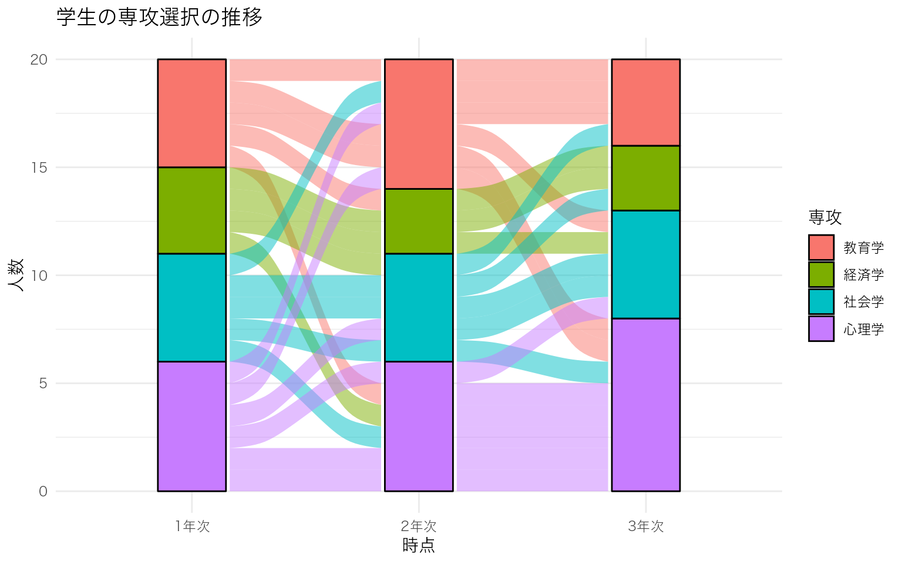
色パレット、ラベル表示、テーマを調整して見やすくする。帯（flow）の色を1年次の専攻で統一すると、各専攻の学生がどこへ移動したかを追いやすい。
# 1年次の専攻を帯の色に使う
df_long2 <- df_alluvial |>
dplyr::rename(初期専攻 = `1年次`) |>
tidyr::pivot_longer(
cols = c(初期専攻, `2年次`, `3年次`),
names_to = "時点",
values_to = "専攻"
) |>
dplyr::mutate(
時点 = dplyr::recode(時点, "初期専攻" = "1年次"),
時点 = factor(時点, levels = c("1年次", "2年次", "3年次"))
)
# 1年次の専攻を各学生に紐づけ
df_long2 <- df_long2 |>
dplyr::group_by(学生ID) |>
dplyr::mutate(初期専攻 = 専攻[時点 == "1年次"]) |>
dplyr::ungroup()
ggplot(df_long2, aes(x = 時点, stratum = 専攻, alluvium = 学生ID, fill = 初期専攻)) +
ggalluvial::geom_flow(stat = "alluvium", lode.guidance = "frontback", alpha = 0.7) +
ggalluvial::geom_stratum(width = 0.3, color = "grey30") +
# 層にラベルを表示
ggplot2::geom_text(
stat = "stratum",
aes(label = after_stat(stratum)),
size = 3.5
) +
scale_fill_brewer(palette = "Set2") +
labs(
x = "時点",
y = "人数",
fill = "1年次の専攻",
title = "専攻選択の推移（1年次の専攻で色分け）"
) +
theme(
legend.position = "bottom",
panel.grid.major.x = element_blank()
)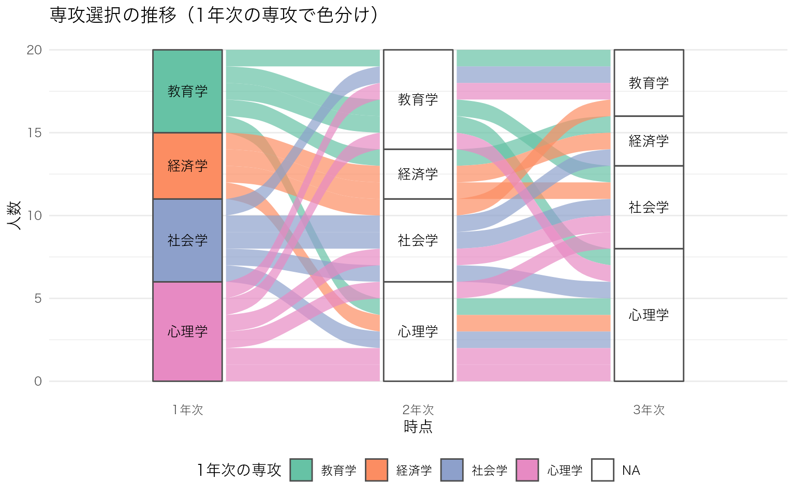
| 用語 | 対応する geom | 役割 |
|---|---|---|
| Stratum（層） | geom_stratum() |
各時点のカテゴリを表す積み上げ棒。カテゴリの度数が棒の高さになる |
| Alluvium（帯） | geom_flow() |
時点間を結ぶ帯。各個体（またはグループ）の移動を太さで表す |
| Lode（節点） | geom_lode() |
各時点における個体の所属位置。通常は明示的に描画しなくてもよい |
データは ロング形式（1行 = 1個体 x 1時点）で用意し、aes() で x（時点）、stratum（カテゴリ）、alluvium（個体ID）を指定する。fill を変えることで、初期カテゴリ・最終カテゴリ・各時点のカテゴリなど、着目したい属性で色分けできる。